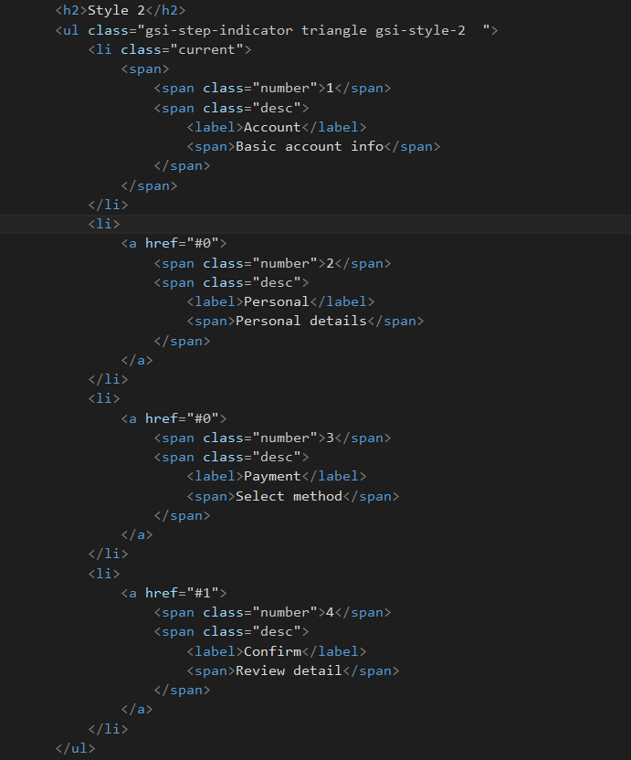

Created: 21/01/2016
By: Rufat Askerov
Email: rufet.esgerov@gmail.com
Thank you for purchasing my theme. If you have any questions that are beyond the scope of this help file, please feel free to email via my user page contact form here. Thanks so much!
This is very simple theme . The general template structure is the same throughout the template. Here is the general structure.
If you would like to edit the theme of template . You should add color class :
<ul class="gsi-step-indicator triangle gsi-style-1"> <ul>
Or if you would like to edit the style of template . You should change class :
<ul class="gsi-step-indicator triangle gsi-style-2"> <ul>
I'm using 3 CSS files in this template.
The first file demo all of the specific stylings for the page
The second file is color theme style for the styling this template.
Once again, thank you so much for purchasing this theme. As I said at the beginning, I'd be glad to help you if you have any questions relating to this theme. No guarantees, but I'll do my best to assist. If you have a more general question relating to the themes on CodeCanyon, you might consider visiting the forums and asking your question in the "Item Discussion" section.
Rufat Askerov